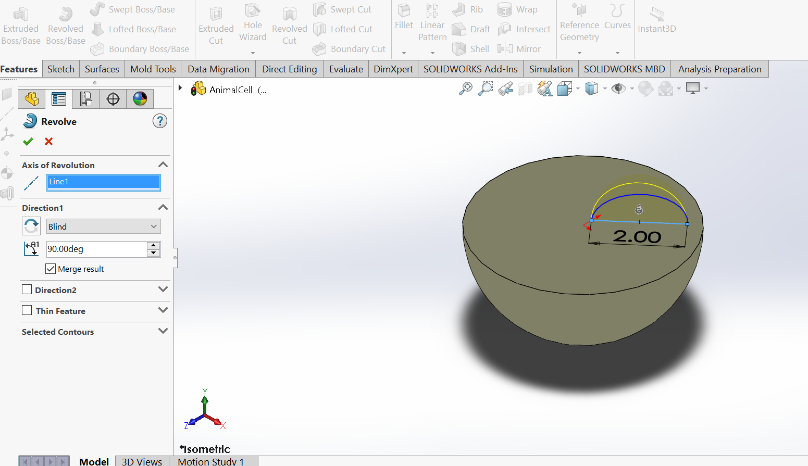
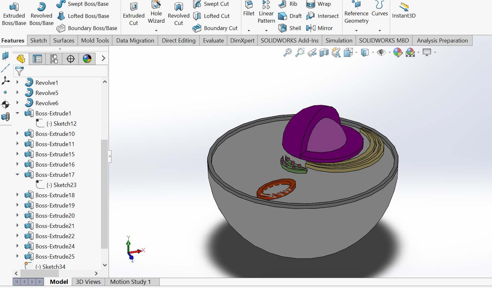
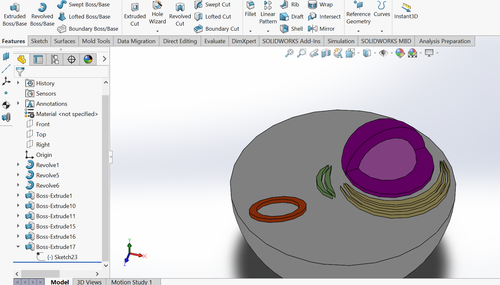

3-D Printed Animal Cell Project
For this project, I collaborated with the "Feelin' DNA" club at UNC Chapel Hill to model and 3-D print an animal cell for visually impaired, elementary-school aged children. I tried to vary the textures of each organelle so they would be distinguishable simply through touch. I have been trained and certified by UNC Chapel-Hill to use a 3-D printer, and am proficient in SolidWorks, a 3-D modeling program.

Dimensioning the base of the half-cell.

Revolving a sketch of the nucleus and nucleolus.

Nucleus, nucleolus, ribosome shell, smooth endoplasmic reticulum, rough endoplasmic reticulum base

A rim was added around the cell to represent the cell membrane. Extruded cylinders were added to distinguish the rough ER from the smooth ER. The rim and extrudes are large enough to be easily felt, providing a kinesthetically understandable experience.

The yellow stacked rectangles represent the centrioles. Smooth curves were added in the ribosome to differentiate between organelles.

Red Organelle=Mitochondria
Blue Dots= Ribosome
Blue Ovals= Golgi Body
Green Textured Arches= Rough ER
Yellow Smooth Arches= Smooth ER
Yellow Stacked Rectangles=Centriole
Dark Purple Sphere= Nuclear Envelope
Light Purple Sphere=Nucleolus
Raised Edge=Cell Membrane